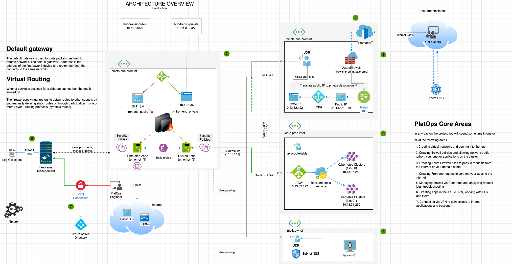

Walkthrough
Overview - Core Architecture
The architecture diagram below represents core areas within Platform Operations. This hands on would visit each one of them and provide you the basic knowledge to get comfortable with the technology stack.
PlatOps Core Architecture
At the end of the hands-on exercises, you can read up on the technical documents for some more details on the core technologies to help solidify the knowledge gained.
This page was last reviewed on 19 December 2024.
It needs to be reviewed again on 19 February 2025
by the page owner platops-build-notices
.
This page was set to be reviewed before 19 February 2025
by the page owner platops-build-notices.
This might mean the content is out of date.